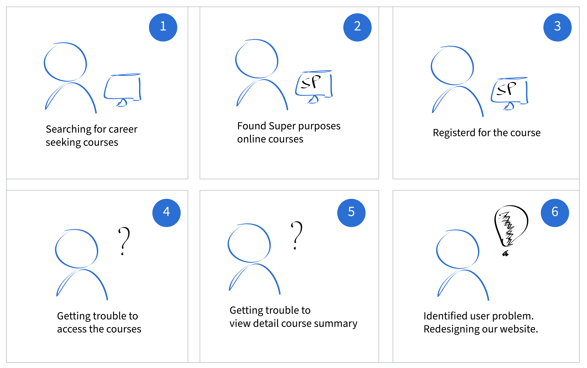
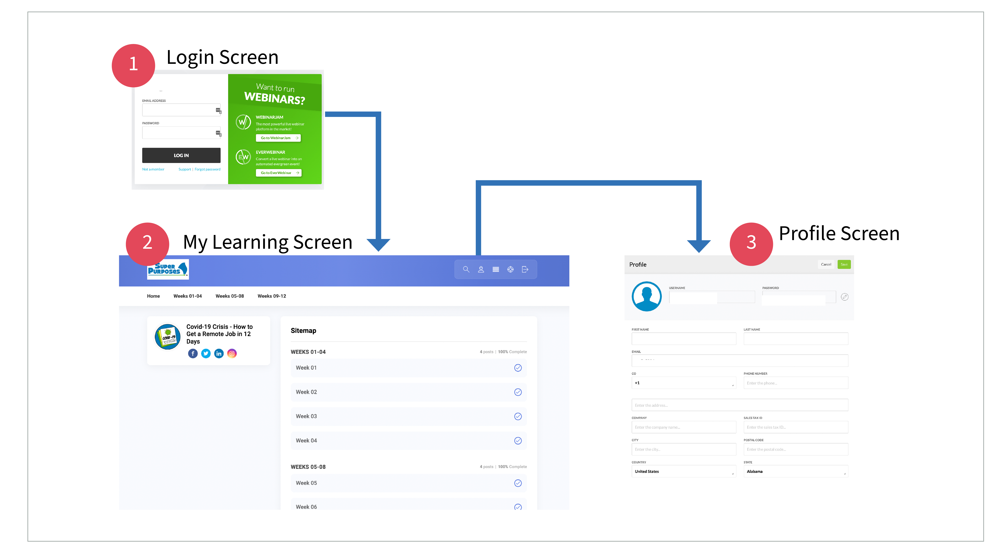
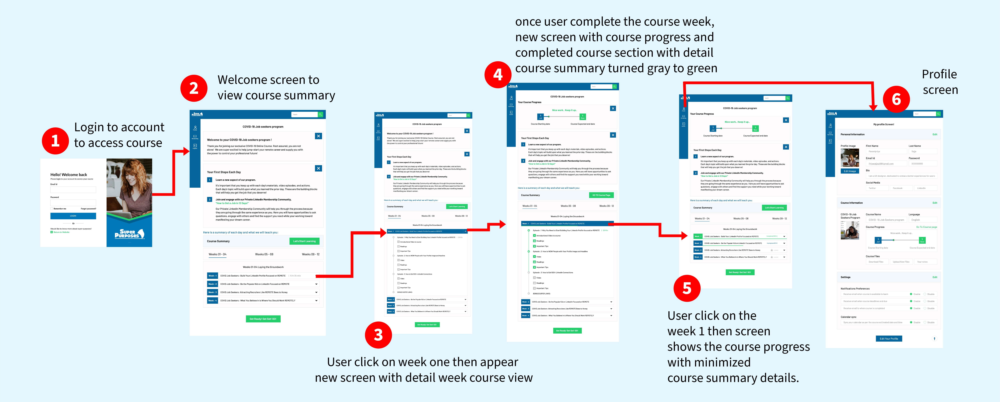
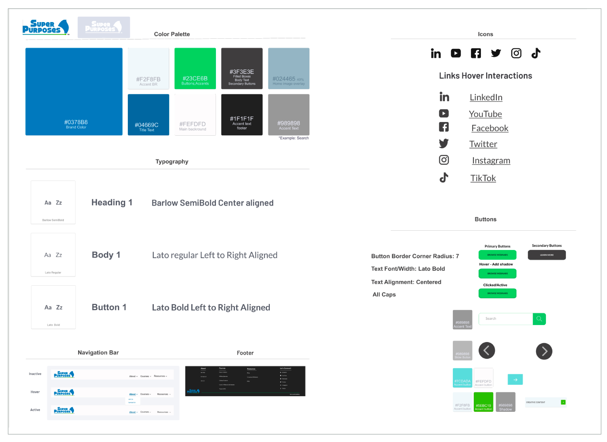

Process
Understand problem context area:
STORYBOARDING: I have started to understand how the user interacts with Super Purposes online classes. Also identified there is a gap between user signup for the course and learning the course. I have noticed that the existing course doesn’t have any profile for users or “My Learning Screen for the course”, using this screen users can easily know where they are in the course. Here is the storyboard that I have designed to understand user pain points while learning their courses.
Identify steps and technologies to close the gap.
Key insights that we found from 14 members including stakeholders, web developers, marketing stagestes, remaining group of UX team members, graphic designers, content writers.
DESIGN PERSPECTIVE (UX/UI) IDEAS: Conducted the website design UI Audit to improve the onboarding flow of the website, Reduce the accessing time of the course.
MARKETING PERSPECTIVE IDEAS: Increase the profit of the company. Increase the number of learners to register for the course.
DEVELOPER PERSPECTIVE IDEAS: Feedback on designed website perspective of web developers on improving SEO and the site performance.
STAKEHOLDER PERSPECTIVE IDEAS:Conducted 8 times of iteration on designed website design with the stakeholder to improve the website design to meet stakeholder expectations.
CONTENT WRITERS & GRAPHIC DESIGN IDEAS: Produced awesome content for the website design as well as graphic design team produces the images and graphics for the website to improve the appearance of the website.
Design and develop ideas
EXISTING USER FLOW:
Improve onboarding flow experience
1. Introduce login and signup screen so the user can login to their course and access them easily.
2. Redesigned new screens to the website that is the user profile screen to view their profile and edit.
3. Designed new screens of course summary screens to access the course easily. Reduce the time on course accessibility.
4. Took help of graphic designers and content writers to improve the appearance of the website.
In this website I have designed login screen, Course summary screens to improve onboard experience of the website.
Redesigned User flow:
Design system:
Solution: (High fidelity website screens)
High fidelity screens according: 1. Welcome screen, 2. After Completion of first weeks, 3. When user clicks to view completed course details, 4. weekly lessons details view, 5. User profile screen.


.jpg)

.jpg)
.jpg)

Conclusion
Outcomes
1. Designed the My Learning screens that showcase the users course progress. 2. Reduce the course access time by Design and develope the user flow that showcase user can access the course easily. 3. Increase the number of users registered for the online course.
Super purposes is my first internship and I am having a wonderful experience working on projects. As a UX Designer, I am not only focusing on the tasks that are provided during the internship. Also I do have a freedom of opportunity to explore more side projects and we can learn every aspect of the company and we can have a chance to participate on each and every company related tasks. As part of exploring the size projects I was a part of marketing and future comparison team members where I learned exciting things that are done on competitor analysis to identify weaknesses and strengths of the company. Also we can do a design feature competitor analysis so we can create outstanding results on high fidelity mockups as well as user flows.
Note: These designs are under development. We are discussing with the developers to bring this high mockups to be published soon.